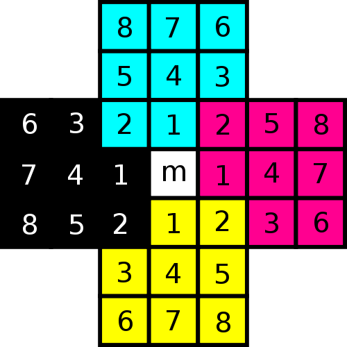
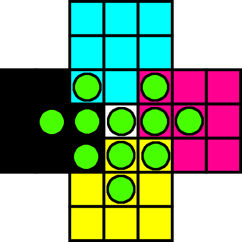
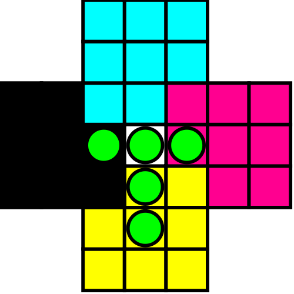

Solitär (auch Solitaire, Steck- oder Solohalma, Springer, Jumper, Nonnenspiel, Einsiedlerspiel) ist ein Brettspiel für eine Person. Das weitest verbreitete Spielfeld ist kreuzförmig und wird mit 32 Steinen auf 33 Felder gestartet. In der Mitte fehlt die Kugel, alle anderen 32 Felder sind besetzt.
Die Bezeichnungen
{kind=link}

Dieses Brett ist hier mit den Bezeichnungen für die Felder dargestellt. Der Buchstabe bezeichnet das Feld (oben, unten, links, rechts, mittig) und die Zahl die genaue Position, wenn man das Brett so dreht, dass das aktuelle Feld oben nur zwei Kugeln hat, sind in der obersten Zeile die Zahlen 1 und 2, in der mittigen 3, 4 und 5 und in der untersten 6, 7 und 8:
Die Regeln
Es gibt vier verschiedene Spielzüge: Der Sprung nach oben, unten, links und rechts. Es muss immer mit einer Kugel über eine andere Kugel auf ein freies Feld gesprungen werden.
Aufgabenstellung
Wie muss man ziehen, damit die letzte Kugel in der Mitte ubrig bleibt?
Die Lösung
Der erste Zug muss mit einer 2er-Kugel gemacht werden. Sagen wir, es ist o4.
| l3 | u3 | r3 | o3 |
| o8 | l8 | u8 | r8 |
| o6 | l6 | u6 | r6 |
| l1 | u1 | r1 | o1 |
| o8 | l8 | u8 | r8 |
Die momentane Situation sieht folgendermaßen aus:
{kind=link}

Nun kann man u1 einmal im Krei (auf r3, r5, o1, l3, l5 und dann wieder auf u1) wandern lassen. Es bleibt eine T-Form übrig:
{kind=link}

Nun muss nur noch m über l1, dann u4, r1 und schließlich l4.